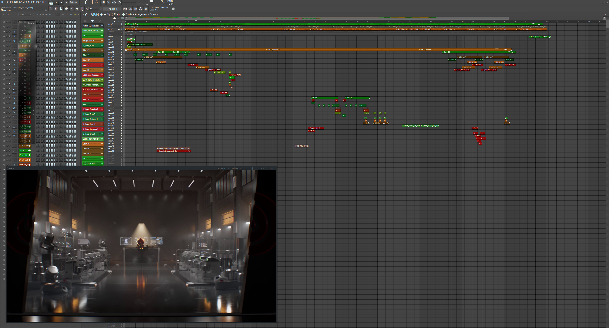

LP Group
Rig e animazione del camaleonte · LP Group · Setpoint Studio
2024 Lo spot, il rig scomposto e il render clay · realizzato in team con Setpoint Studio
LP Group — lo spot
Lo spot finito, con la regia di Setpoint Studio. La mia parte è il rig e l'animazione del camaleonte, integrati con concept, modellazione, lookdev e sound design del team.
Cosa ho fatto, e perché
Tre paragrafi: cosa chiedeva il progetto, qual è stata la mia parte e quali problemi tecnici poneva il camaleonte. Il resto della pagina (video, monitor, team) ne è la prova.
Il progetto
Uno spot di marca per LP Group con un protagonista: un camaleonte 3D fotorealistico. Ho costruito il rig della creatura da cima a fondo e l'ho animato nello spot: meccanica del corpo, sistema facciale, dinamica della lingua (una lingua a proiettile), coda spline e animazione fotogramma per fotogramma. Pipeline di Setpoint Studio, controlli pensati per chi anima, deformazioni stabili anche nelle pose estreme.
La mia parte: rig e animazione
- Rig del corpo — scheletro da quadrupede con switch IK/FK e arti estensibili · controllo dito per dito delle dita prensili (le cinque dita del camaleonte fanno presa opponendosi)
- Dinamica della lingua — sistema spline a curvatura variabile per la lingua a proiettile, con squash & stretch automatico e arrotolamento progressivo da slider
- Coda spline — coda prensile con catena FK e overlap secondario dinamico, capace di arrotolarsi su sé stessa
- Rig facciale — occhi indipendenti (il camaleonte li ruota uno separato dall'altro, a 360°), palpebre a blendshape, apertura della mandibola con la lingua che esce agganciata
- Preparazione della pelle — UV e topologia ottimizzate per il displacement delle squame, più uno strato di cromatofori (il cambio di colore con una texture animata)
- Strumenti in Python — pezzi di auto-rig per accelerare le revisioni
- Animazione del personaggio — la recitazione nello spot: corpo, espressioni del volto, colpo di lingua, movimento secondario della coda per l'equilibrio. Animazione a keyframe e pulizia nel graph editor
I problemi tecnici
Il camaleonte ha tre caratteristiche che escono dallo standard del quadrupede e chiedono un rig su misura: occhi indipendenti (non possono condividere un aim constraint), una lingua balistica (impossibile animarla solo a keyframe: deve essere procedurale) e dita zigodattile (due davanti e tre dietro, opponibili). Ognuna ha richiesto un sottosistema dedicato.
Strumenti
Maya · Python · MEL · auto-rig su misura · ZBrush (revisione della scultura) · Substance Painter (preparazione dello shading)
Turnaround — geometria e rig
Stessa rotazione 360°, due passaggi della pipeline: a sinistra il modello pulito, a destra lo stesso personaggio con il rig visibile. Passa il cursore sul video, o trascina il dito dal telefono: dove passi compaiono i controlli del rig sotto la pelle.
Il rig scomposto — i sistemi in movimento
Una parete di monitor: il render clay e i sottosistemi del rig presi uno per uno, ognuno con i suoi dati (timecode, fotogramma, attributi). Nessuna post-produzione: solo il viewport di Maya.
Sound design
Oltre a rig e animazione ho curato il sound design dello spot: i foley del camaleonte, il colpo di lingua, i suoni d'ambiente e il mix finale. Qui la sessione nella DAW: tracce, automazioni, regioni.

Crediti
Lo spot l'ha prodotto un team di più discipline. Ogni nome qui sotto ha fatto un pezzo dello spot finito: rig e animazione del camaleonte sono la mia parte, il resto è merito loro.
- Movieboard Gabriele Carollo →
- Concept Art Damiano D’Emilio →
- Artisti 3D Francesco Marchioro · Alessandro Giacobbi rig e animazione · Damiano D’Emilio
- Sound Design Alessandro Giacobbi →
- Cliente LP Group
- Studio Setpoint Studio S.r.l. →